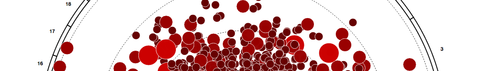
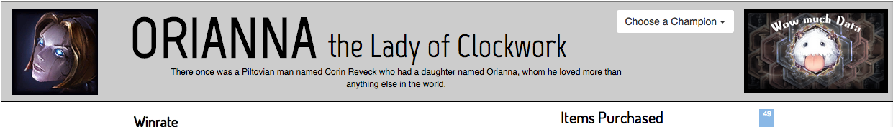
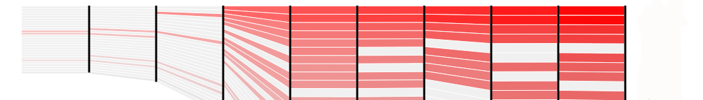
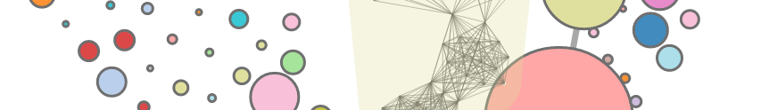
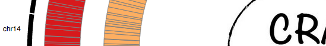
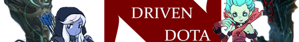

Angela Fan
huihuifan@college.harvard.edu
Visualizations labeled "static" are shown as images due to proprietary data concerns.
Fall 2014
Scientific Collaboration Network
Curved edges, node labels. Based on manuscrpt co-authorship. Created for Harvard-MIT Art Expo.

Fall 2014
Chromosome Circos Diagram
Displays important genetic measurements based on their chromosomal location.
Fall 2014
LOL Such Data
Guide for new League of Legends players, created in 24 hours for Harvard Hackfest

Summer 2014
Full Network
Network with whiskering, tapered edges, and node attributes. Static only.
Summer 2014
Streamgraph
New take on classic streamgraphs inspired by Ben Fry's Isometric blocks. Static only.

Summer 2014
Co-authorship Collaboration Network
Interactive network with Louvain community detection, expanding hulls, and force minimized vibration.

Summer 2014
CRAVE
Interactive visualization of comparative genomic intervals of interest based on user-selected reference.

Spring 2014
Data Driven Dota
Individualized statistics for players of Dota 2 in the form of interactive graphs and filtering selections.

Spring 2014
d3 Circos
Interactive multi-ring Circos plots with top-k filtering.